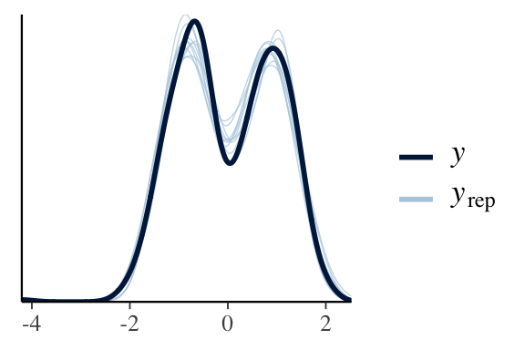
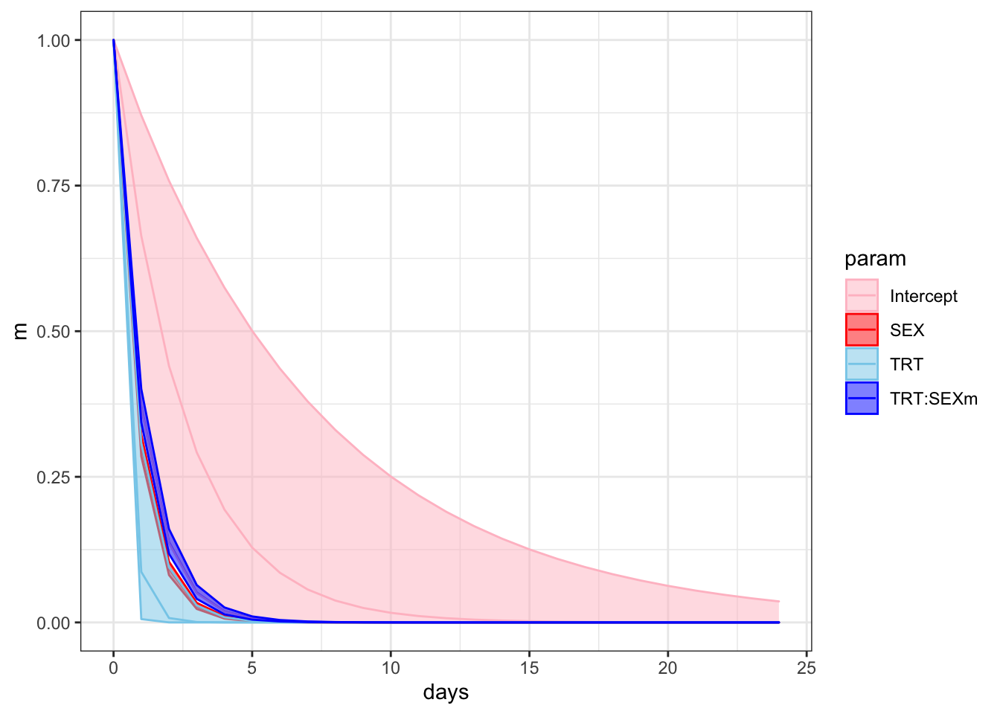
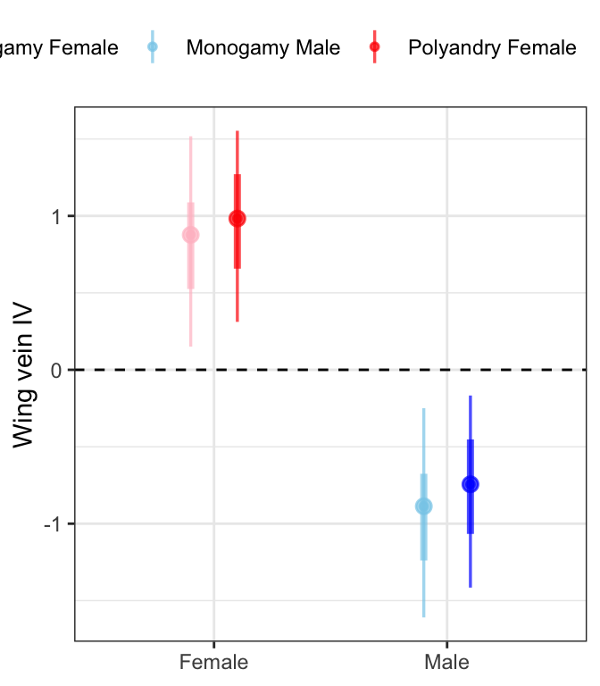

Juvenile development time
Last updated: 2020-12-18
Checks: 7 0
Knit directory: exp_evol_respiration/
This reproducible R Markdown analysis was created with workflowr (version 1.6.2). The Checks tab describes the reproducibility checks that were applied when the results were created. The Past versions tab lists the development history.
Great! Since the R Markdown file has been committed to the Git repository, you know the exact version of the code that produced these results.
Great job! The global environment was empty. Objects defined in the global environment can affect the analysis in your R Markdown file in unknown ways. For reproduciblity it’s best to always run the code in an empty environment.
The command set.seed(20190703) was run prior to running the code in the R Markdown file. Setting a seed ensures that any results that rely on randomness, e.g. subsampling or permutations, are reproducible.
Great job! Recording the operating system, R version, and package versions is critical for reproducibility.
Nice! There were no cached chunks for this analysis, so you can be confident that you successfully produced the results during this run.
Great job! Using relative paths to the files within your workflowr project makes it easier to run your code on other machines.
Great! You are using Git for version control. Tracking code development and connecting the code version to the results is critical for reproducibility.
The results in this page were generated with repository version a0c557c. See the Past versions tab to see a history of the changes made to the R Markdown and HTML files.
Note that you need to be careful to ensure that all relevant files for the analysis have been committed to Git prior to generating the results (you can use wflow_publish or wflow_git_commit). workflowr only checks the R Markdown file, but you know if there are other scripts or data files that it depends on. Below is the status of the Git repository when the results were generated:
Ignored files:
Ignored: .DS_Store
Ignored: .Rapp.history
Ignored: .Rproj.user/
Ignored: analysis/.DS_Store
Ignored: code/old mediator variable code.R
Ignored: output/.DS_Store
Note that any generated files, e.g. HTML, png, CSS, etc., are not included in this status report because it is ok for generated content to have uncommitted changes.
These are the previous versions of the repository in which changes were made to the R Markdown (analysis/juvenile_development.Rmd) and HTML (docs/juvenile_development.html) files. If you’ve configured a remote Git repository (see ?wflow_git_remote), click on the hyperlinks in the table below to view the files as they were in that past version.
| File | Version | Author | Date | Message |
|---|---|---|---|---|
| Rmd | a0c557c | lukeholman | 2020-12-18 | new title |
| html | 41d232f | lukeholman | 2020-12-18 | Build site. |
| html | 6861115 | lukeholman | 2020-12-18 | Build site. |
| html | 0d5bcc9 | lukeholman | 2020-12-18 | Build site. |
| html | 989e86f | lukeholman | 2020-12-18 | Build site. |
| Rmd | 5a81a83 | lukeholman | 2020-12-18 | new menu |
| Rmd | 96d1188 | Martin Garlovsky | 2020-12-13 | MDG commit |
| html | 96d1188 | Martin Garlovsky | 2020-12-13 | MDG commit |
| Rmd | 7d4b609 | Martin Garlovsky | 2020-12-05 | MDG commit |
| html | 7d4b609 | Martin Garlovsky | 2020-12-05 | MDG commit |
| html | df61dde | Martin Garlovsky | 2020-12-04 | MDG commit |
| Rmd | 0714753 | Martin Garlovsky | 2020-12-04 | workflowr::wflow_git_commit(all = T) |
| Rmd | 3fdbcb2 | lukeholman | 2020-11-30 | Tweaks Nov 2020 |
Load packages
library(tidyverse)
library(ggridges)
library(coxme)
library(lme4)
library(nlme)
library(brms)
library(tidybayes)
library(kableExtra)
library(knitrhooks) # install with devtools::install_github("nathaneastwood/knitrhooks")
output_max_height() # a knitrhook option
options(stringsAsFactors = FALSE)Load data
# load eclosion data
eclosion.dat <- read.csv("data/1.eclosion_times.csv")
# remove vials seeded with more than 100 larvae
unique(eclosion.dat[which(eclosion.dat$eclosing < 0), "ID"]) # 4 vials overseeded
eclosion.dat.trim <- eclosion.dat %>%
filter(ID %in% eclosion.dat[which(eclosion.dat$eclosing < 0), "ID"] == FALSE)
# expand data frame so each row is a single fly
ecl.dat <- reshape::untable(eclosion.dat.trim[ ,c(1:7, 9, 10)],
num = eclosion.dat.trim[, 8])
# load wing length data
wing_length <- read.csv("data/1.wing_length.csv") %>%
# scale wing vein length to make effect size comparisons with other data sets?
mutate(Length = as.numeric(scale(Length)))
# add replicate
wing_length$LINE <- paste0(wing_length$Treatment, substr(wing_length$Rep, 2, 2))Inspecting the raw data
cols <- c("M females" = "pink",
"P females" = "red",
"M males" = "skyblue",
"P males" = "blue")
eplot <- ecl.dat %>%
filter(EVENT == 1) %>%
mutate(var = paste(TRT, SEX)) %>%
ggplot(aes(x = DAY, y = SEX, fill = var)) +
geom_boxplot() +
scale_fill_manual(values = c("pink", "skyblue", "red", "blue"), name = "") +
theme_bw() +
theme(legend.position = 'non') +
NULL
lplot <- wing_length %>%
mutate(var = paste(Treatment, Sex)) %>%
ggplot(aes(x = Sex, y = Length)) +
geom_violin(aes(fill = var), alpha = .5) +
geom_boxplot(aes(fill = var), width = .1, position = position_dodge(width = .9)) +
scale_colour_manual(values = c("pink", "skyblue", "red", "blue"), name = "") +
scale_fill_manual(values = c("pink", "skyblue", "red", "blue"), name = "") +
theme_bw() +
theme() +
NULL
gridExtra::grid.arrange(eplot, lplot, ncol = 2)
Figure 1: Time to eclosion in days for flies in each treatment split by sex. Wing vein IV length has been scaled (subtracted the mean and divided by the standard deviation). We see one Monogamy male with an unusually small value for wing length - possible error in data entry or measurement error?
Some information on survival analysis…
Here are some useful links for understanding survival analyis. For instance, this link provides an explanation of how to interpret hazard ratios.
The exponents of the coefficients from a Cox model give the hazard ratio, an estimate of the effect size of covariates. In short, hazard ratios give the probability of the event occurring compared to ‘control’ in our case compared to Monogamy females.
- Hazard ratio = 1: no effect
- Hazard ratio > 1: reduced hazard
- Hazard ratio < 1: increased hazard
Fit the model for eclosion time in coxme
We will model time to eclosion (in days) using survival analysis. We measured the time in days from 1st instar until eclosion (EVENT = 1) upon which flies were stored in ethanol before counting. Of the initially seeded 100 flies per vial, the remaining flies not emerging after two consecutive days of no observed eclosions were right censored (EVENT = 0) on the last observation day. In total 14400 larvae were seeded (100 larvae x 2 Treatment x 4 LINE x 6 VIAL x 3 SEED). For P1 only three vials were seeded on day B so we seeded 3 additional vials on day C. Four vials were seeded with too many larvae and excluded from analysis. In total 10448 flies successfully emerged during the observation period leaving 3552 individuals to be right censored on day 9. Censored flies were assigned sex based on the observed sex ratio of eclosees. We calculated the number of flies of each sex that emerged from each vial, and assigned the remaining censored individuals (of unknown sex) sex based on the proportion of individuals of each sex that did emerge, so that overall an equal sex ratio of females:males was assigned to each vial.
First we plot Kaplan-Meier survival curves and the median time to eclosion without considering our full experimental design.
survminer::ggsurvplot(survfit(Surv(DAY, EVENT) ~ TRT + SEX, data = ecl.dat),
conf.int = TRUE,
risk.table = FALSE,
linetype = "SEX",
palette = c("pink", "red", "skyblue", "blue"),
fun = "event",
xlim = c(12, 21),
xlab = "Days",
ylab = "Cumulative proportion eclosed",
legend = 'right',
legend.title = "",
legend.labs = c("M \u2640","M \u2642",'P \u2640','P \u2642'),
break.time.by = 2,
ggtheme = theme_bw())
Figure X: Kaplan-Meier curve for eclosion time (in days) for flies in each treatment and sex. +’s indicate censored individuals (n = 3552).
# median eclosion times
survfit(Surv(DAY, EVENT) ~ TRT + SEX, data = ecl.dat)Call: survfit(formula = Surv(DAY, EVENT) ~ TRT + SEX, data = ecl.dat)
n events median 0.95LCL 0.95UCL
TRT=M, SEX=f 3637 3059 16 16 16
TRT=M, SEX=m 3363 2697 16 16 16
TRT=P, SEX=f 3568 2492 18 18 18
TRT=P, SEX=m 3432 2200 18 18 18
Next we need to check that the proportional hazards assumption is not violated before fitting the full model. Here we plot the log-log of the survival curves (take the natural logarithm of the cumulative hazard twice). Crossing hazards (lines) indicate violation of the proportional hazards assumption.
# assess proportional hazards assumption
par(mar = c(2, 2, 2, 2))
plot(survfit(Surv(DAY, EVENT) ~ TRT + SEX, data = ecl.dat),
lty = 1:2, lwd = 2,
col = c("pink", "red", "skyblue", "blue"),
fun = "cloglog")
legend("bottomright", c("M \u2640","M \u2642",'P \u2640','P \u2642'),
col = c("pink", "skyblue", "red", "blue"),
lty = 1:2,
lwd = 2,
bty = 'n'
)
Figure X: ln(-ln(survival))
Looks good so we continue to fit the model.
Fitting the coxme model
We fit a mixed effects Cox Proportional hazards model using the coxme package, with time (days) to event (eclosion) as the response and TRT (Monogamy or Polyandry), SEX (female or male) and their interaction as predictors. We also need to account for the experimental design by including the random effects of LINE, SEED day and vial ID. We calculated p-values using likelihood ratio tests comparing the full model to a model where the fixed effect of interest was removed.
# coxmod <- coxme(Surv(DAY, EVENT) ~ TRT * SEX + (1|LINE) + (1|SEED) + (1|ID),
# data = ecl.dat)
# load in the model instead of running
coxmod <- readRDS('output/coxmod.rds')
# null models to generate P-values using likelihood ratio tests
# coxmod_dropTRT <- coxme(Surv(DAY, EVENT) ~ 1 + SEX + (1|LINE) + (1|SEED) + (1|ID), data = ecl.dat)
# coxmod_dropSEX <- coxme(Surv(DAY, EVENT) ~ TRT + 1 + (1|LINE) + (1|SEED) + (1|ID), data = ecl.dat)
# coxmod_dropINT <- coxme(Surv(DAY, EVENT) ~ TRT + SEX + (1|LINE) + (1|SEED) + (1|ID), data = ecl.dat)
coxmod_dropTRT <- readRDS('output/coxmod_dropTRT.rds')
coxmod_dropSEX <- readRDS('output/coxmod_dropSEX.rds')
coxmod_dropINT <- readRDS('output/coxmod_dropINT.rds')
# make a table of the results
bind_rows(
broom::tidy(anova(coxmod, coxmod_dropTRT)),
broom::tidy(anova(coxmod, coxmod_dropSEX)),
broom::tidy(anova(coxmod, coxmod_dropINT))) %>%
cbind(Parameter = rep(c('Treatment', 'Sex', 'Treatment x Sex'), each = 2)) %>%
na.omit() %>%
mutate(across(1:4, round, 3)) %>%
as_tibble %>%
relocate(Parameter, loglik, statistic, df, p.value) %>%
kable() %>%
kable_styling() %>%
kable_styling(full_width = FALSE)| Parameter | loglik | statistic | df | p.value |
|---|---|---|---|---|
| Treatment | -92191.30 | 7.765 | 2 | 0.021 |
| Sex | -92235.26 | 95.679 | 2 | 0.000 |
| Treatment x Sex | -92187.43 | 0.011 | 1 | 0.916 |
We see there is an effect of treatment and sex but not their interaction. We can calculate estimates and confidence intervals for the hazard ratio by taking the exponent of the coefficients ± 1.96 * sqrt(vcov(???)). Polyandrous flies have a reduced hazard compared to Monogamy flies, i.e. take longer to eclose (hazard ratio = 0.377, CI = 0.227, 0.627). Males have a reduced hazard compared to females (hazard ratio = 0.823, CI = 0.782, 0.867).
Fit the model in brms
I found this link useful for fitting survival models in brms.
if(!file.exists("output/cox_brms.rds")){
cox_brm <- brm(DAY | cens(1 - EVENT) ~ TRT * SEX + (1|LINE) + (1|SEED) + (1|ID),
iter = 5000, chains = 4, cores = 4,
control = list(max_treedepth = 20,
adapt_delta = 0.999),
data = ecl.dat, family = cox())
saveRDS(cox_brm, "output/cox_brms.rds")
} else {
cox_brm <- readRDS('output/cox_brms.rds')
}
summary(cox_brm) Family: cox
Links: mu = log
Formula: DAY | cens(1 - EVENT) ~ TRT * SEX + (1 | LINE) + (1 | SEED) + (1 | ID)
Data: ecl.dat (Number of observations: 14000)
Samples: 4 chains, each with iter = 5000; warmup = 2500; thin = 1;
total post-warmup samples = 10000
Group-Level Effects:
~ID (Number of levels: 140)
Estimate Est.Error l-95% CI u-95% CI Rhat Bulk_ESS Tail_ESS
sd(Intercept) 0.44 0.03 0.38 0.50 1.00 1751 3037
~LINE (Number of levels: 8)
Estimate Est.Error l-95% CI u-95% CI Rhat Bulk_ESS Tail_ESS
sd(Intercept) 0.47 0.19 0.24 0.97 1.00 2189 3550
~SEED (Number of levels: 3)
Estimate Est.Error l-95% CI u-95% CI Rhat Bulk_ESS Tail_ESS
sd(Intercept) 0.51 0.61 0.08 2.25 1.00 1961 2566
Population-Level Effects:
Estimate Est.Error l-95% CI u-95% CI Rhat Bulk_ESS Tail_ESS
Intercept 0.89 0.49 0.00 1.98 1.00 2196 2184
TRTP -0.89 0.36 -1.64 -0.16 1.00 2504 3307
SEXm -0.18 0.03 -0.23 -0.12 1.00 7347 6755
TRTP:SEXm 0.01 0.04 -0.07 0.09 1.00 7296 7851
Samples were drawn using sampling(NUTS). For each parameter, Bulk_ESS
and Tail_ESS are effective sample size measures, and Rhat is the potential
scale reduction factor on split chains (at convergence, Rhat = 1).
fixef(cox_brm) %>%
data.frame() %>%
rownames_to_column() %>%
rename(Parameter = rowname) %>%
kable() %>%
kable_styling() %>%
kable_styling(full_width = FALSE)| Parameter | Estimate | Est.Error | Q2.5 | Q97.5 |
|---|---|---|---|---|
| Intercept | 0.8907941 | 0.4862808 | 0.0025523 | 1.9775770 |
| TRTP | -0.8934343 | 0.3635685 | -1.6424421 | -0.1644978 |
| SEXm | -0.1750960 | 0.0264880 | -0.2270423 | -0.1228412 |
| TRTP:SEXm | 0.0103648 | 0.0397943 | -0.0672883 | 0.0888395 |
Posterior means of hazard functions (\(\lambda\))
1 / exp(fixef(cox_brm)[, -2])Estimate Q2.5 Q97.5 Intercept 0.4103298 0.9974509 0.1384042 TRTP 2.4435070 5.1677742 1.1788010 SEXm 1.1913606 1.2548830 1.1307049 TRTP:SEXm 0.9896887 1.0696037 0.9149924
Hypothesis testing - eclosion time
hyp_test <- bind_rows(
hypothesis(cox_brm, 'TRTP = 0')$hypothesis,
hypothesis(cox_brm, 'SEXm = 0')$hypothesis,
hypothesis(cox_brm, 'TRTP:SEXm = 0')$hypothesis
) %>%
mutate(Parameter = c('Polandry', 'Male', 'Polyandry x Male'),
across(2:5, round, 3)) %>%
#select(-Hypothesis) %>%
relocate(Parameter, Estimate, Est.Error, CI.Lower, CI.Upper, Star)
pvals <- bayestestR::p_direction(cox_brm) %>%
as.data.frame() %>%
mutate(vars = map_chr(str_split(Parameter, "_"), ~ .x[2]),
p_val = 1 - pd,
star = ifelse(p_val < 0.05, "\\*", "")) %>%
select(vars, p_val, star)
hyp_test %>%
mutate(vars = c('TRTP', 'SEXm', 'TRTP:SEXm')) %>%
left_join(pvals %>% filter(vars != 'Intercept'),
by = c("vars")) %>%
select(Parameter, Estimate, Est.Error, CI.Lower, CI.Upper, `p` = p_val, star) %>%
rename(` ` = star) %>%
kable() %>%
kable_styling(full_width = FALSE)| Parameter | Estimate | Est.Error | CI.Lower | CI.Upper | p | |
|---|---|---|---|---|---|---|
| Polandry | -0.893 | 0.364 | -1.642 | -0.164 | 0.0125 | * |
| Male | -0.175 | 0.026 | -0.227 | -0.123 | 0.0000 | * |
| Polyandry x Male | 0.010 | 0.040 | -0.067 | 0.089 | NA | NA |
Plot posteriors.
# get posterior predictions
post_cox <- posterior_samples(cox_brm) %>%
as_tibble() %>%
select(contains("b_"), -contains("Intercept")) %>%
mutate(draw = 1:n()) %>%
pivot_longer(-draw) %>%
mutate(key = str_remove_all(name, "b_"))
post_cox %>%
ggplot(aes(value, key, fill = key)) +
geom_vline(xintercept = 0, linetype = 2) +
stat_halfeye(alpha = .8) +
scale_fill_brewer(palette = "Spectral") +
ylab("Model parameter") +
xlab("Effect on Wing length") +
theme_ridges() +
theme(legend.position = "none") +
NULL
# wrangle
f <-
fixef(cox_brm) %>%
data.frame() %>%
rownames_to_column() %>%
mutate(param = str_remove(rowname, "m|P")) %>%
tidyr::expand(nesting(Estimate, Q2.5, Q97.5, param),
days = 0:24) %>%
mutate(m = 1 - pexp(days, rate = 1 / exp(Estimate)),
ll = 1 - pexp(days, rate = 1 / exp(Q2.5)),
ul = 1 - pexp(days, rate = 1 / exp(Q97.5)))
# plot!
f %>%
ggplot(aes(x = days)) +
# geom_hline(yintercept = .5, linetype = 3, aes(color = param)) +
geom_ribbon(aes(ymin = ll, ymax = ul, fill = param),
alpha = 1/2) +
# geom_line(aes(y = m, aes(color = cols))) +
# scale_fill_manual(values = wes_palette("Moonrise2")[c(4, 1)], breaks = NULL) +
# scale_color_manual(values = wes_palette("Moonrise2")[c(4, 1)], breaks = NULL) +
# scale_y_continuous("proportion remaining", , breaks = c(0, .5, 1), limits = c(0, 1)) +
xlab("days to adoption") +
NULL
f %>%
ggplot(aes(x = days, y = m, colour = param)) +
geom_line() +
geom_ribbon(aes(ymin = ll, ymax = ul, fill = param), alpha = 1/2) +
scale_colour_manual(values = c("pink", "red", "skyblue", "blue")) +
scale_fill_manual(values = c("pink", "red", "skyblue", "blue")) +
theme_bw() +
theme() +
NULL
Body size differences between treatments and sexes
We measured the length of wing vein IV for a subset of flies as a correlate of body size, which may influence development time.
if(!file.exists("output/wing_brms.rds")){
wing_brms <- brm(Length ~ Treatment * Sex + (1|LINE) + (1|Seed),
data = wing_length,
iter = 5000, chains = 4, cores = 4,
prior = c(set_prior("normal(0,1)", class = "b"),
set_prior("cauchy(0,1)", class = "sd")),
control = list(max_treedepth = 20,
adapt_delta = 0.999)
)
saveRDS(wing_brms, "output/wing_brms.rds")
} else {
wing_brms <- readRDS('output/wing_brms.rds')
}
pp_check(wing_brms)
Plot posteriors.
# get posterior predictions
post_dat <- posterior_samples(wing_brms) %>%
as_tibble() %>%
select(contains("b_"), -contains("Intercept")) %>%
mutate(draw = 1:n()) %>%
pivot_longer(-draw) %>%
mutate(key = str_remove_all(name, "b_"))
post_dat %>%
ggplot(aes(value, key, fill = key)) +
geom_vline(xintercept = 0, linetype = 2) +
stat_halfeye(alpha = .8) +
scale_fill_brewer(palette = "Spectral") +
ylab("Model parameter") +
xlab("Effect on Wing length") +
theme_ridges() +
theme(legend.position = "none") +
NULL
Hypothesis testing - body size
wing_test <- bind_rows(
hypothesis(wing_brms, 'TreatmentP = 0')$hypothesis,
hypothesis(wing_brms, 'SexM = 0')$hypothesis,
hypothesis(wing_brms, 'TreatmentP:SexM = 0')$hypothesis
) %>%
mutate(Parameter = c('Polandry', 'Male', 'Polyandry x Male'),
across(2:5, round, 3)) %>%
#select(-Hypothesis) %>%
relocate(Parameter, Estimate, Est.Error, CI.Lower, CI.Upper, Star)
pvals <- bayestestR::p_direction(wing_brms) %>%
as.data.frame() %>%
mutate(vars = map_chr(str_split(Parameter, "_"), ~ .x[2]),
p_val = 1 - pd,
star = ifelse(p_val < 0.05, "\\*", "")) %>%
select(vars, p_val, star)
wing_test %>% mutate(vars = c('TreatmentP', 'SexM', 'TreatmentP.SexM')) %>%
left_join(pvals %>% filter(vars != 'Intercept'),
by = c("vars")) %>%
select(Parameter, Estimate, Est.Error, CI.Lower, CI.Upper, `p` = p_val, star) %>%
mutate(p = ifelse(p > 0.001, round(p, 3), '< 0.001')) %>%
rename(` ` = star) %>%
kable() %>%
kable_styling(full_width = FALSE)| Parameter | Estimate | Est.Error | CI.Lower | CI.Upper | p | |
|---|---|---|---|---|---|---|
| Polandry | 0.125 | 0.289 | -0.457 | 0.701 | 0.316 | |
| Male | -1.764 | 0.042 | -1.847 | -1.681 | < 0.001 | * |
| Polyandry x Male | 0.040 | 0.060 | -0.077 | 0.159 | 0.256 |
Extract posterior estimates and plot
fitbrms <- wing_length %>%
modelr::data_grid(Treatment, Sex, LINE, Seed) %>%
add_fitted_draws(wing_brms) %>%
sample_frac(size = .5)
fitbrms %>%
mutate(Treatment = ifelse(Treatment == "M", "Monogamy", "Polyandry"),
Sex = ifelse(Sex == "F", "Female", "Male"),
var = paste(Treatment, Sex)) %>%
ggplot(aes(x = Sex, y = .value, colour = var)) +
geom_hline(yintercept = 0, linetype = 2) +
stat_pointinterval(position = position_dodge(0.4),
fill = NA, .width = c(0.5, 0.95), alpha = 0.7) +
scale_colour_manual(values = c("pink", "skyblue", "red", "blue"), name = "") +
labs(y = 'Wing vein IV') +
theme_bw() +
theme(legend.position = 'top',
axis.title.x = element_blank()) +
NULL
Males are smaller than females and there is no effect of selection treatment on wing length.
sessionInfo()R version 4.0.3 (2020-10-10) Platform: x86_64-apple-darwin17.0 (64-bit) Running under: macOS Catalina 10.15.4 Matrix products: default BLAS: /Library/Frameworks/R.framework/Versions/4.0/Resources/lib/libRblas.dylib LAPACK: /Library/Frameworks/R.framework/Versions/4.0/Resources/lib/libRlapack.dylib locale: [1] en_AU.UTF-8/en_AU.UTF-8/en_AU.UTF-8/C/en_AU.UTF-8/en_AU.UTF-8 attached base packages: [1] stats graphics grDevices utils datasets methods base other attached packages: [1] knitrhooks_0.0.4 knitr_1.30 kableExtra_1.1.0 tidybayes_2.0.3 [5] brms_2.14.4 Rcpp_1.0.4.6 nlme_3.1-149 lme4_1.1-23 [9] Matrix_1.2-18 coxme_2.2-16 bdsmatrix_1.3-4 survival_3.2-7 [13] ggridges_0.5.2 forcats_0.5.0 stringr_1.4.0 dplyr_1.0.0 [17] purrr_0.3.4 readr_1.3.1 tidyr_1.1.0 tibble_3.0.1 [21] ggplot2_3.3.2 tidyverse_1.3.0 workflowr_1.6.2 loaded via a namespace (and not attached): [1] readxl_1.3.1 backports_1.1.7 plyr_1.8.6 [4] igraph_1.2.5 svUnit_1.0.3 splines_4.0.3 [7] crosstalk_1.1.0.1 TH.data_1.0-10 rstantools_2.1.1 [10] inline_0.3.15 digest_0.6.25 htmltools_0.5.0 [13] rsconnect_0.8.16 fansi_0.4.1 magrittr_2.0.1 [16] openxlsx_4.1.5 modelr_0.1.8 RcppParallel_5.0.1 [19] matrixStats_0.56.0 xts_0.12-0 sandwich_2.5-1 [22] prettyunits_1.1.1 colorspace_1.4-1 blob_1.2.1 [25] rvest_0.3.5 haven_2.3.1 xfun_0.19 [28] callr_3.4.3 crayon_1.3.4 jsonlite_1.7.0 [31] zoo_1.8-8 glue_1.4.2 survminer_0.4.8 [34] gtable_0.3.0 emmeans_1.4.7 webshot_0.5.2 [37] V8_3.4.0 car_3.0-8 pkgbuild_1.0.8 [40] rstan_2.21.2 abind_1.4-5 scales_1.1.1 [43] mvtnorm_1.1-0 DBI_1.1.0 rstatix_0.5.0 [46] miniUI_0.1.1.1 viridisLite_0.3.0 xtable_1.8-4 [49] foreign_0.8-80 km.ci_0.5-2 stats4_4.0.3 [52] StanHeaders_2.21.0-3 DT_0.13 htmlwidgets_1.5.1 [55] httr_1.4.1 threejs_0.3.3 arrayhelpers_1.1-0 [58] ellipsis_0.3.1 farver_2.0.3 reshape_0.8.8 [61] pkgconfig_2.0.3 loo_2.3.1 dbplyr_1.4.4 [64] labeling_0.3 tidyselect_1.1.0 rlang_0.4.6 [67] reshape2_1.4.4 later_1.0.0 munsell_0.5.0 [70] cellranger_1.1.0 tools_4.0.3 cli_2.0.2 [73] generics_0.0.2 broom_0.5.6 evaluate_0.14 [76] fastmap_1.0.1 yaml_2.2.1 processx_3.4.2 [79] fs_1.4.1 zip_2.0.4 survMisc_0.5.5 [82] whisker_0.4 mime_0.9 projpred_2.0.2 [85] xml2_1.3.2 compiler_4.0.3 bayesplot_1.7.2 [88] shinythemes_1.1.2 rstudioapi_0.11 gamm4_0.2-6 [91] curl_4.3 ggsignif_0.6.0 reprex_0.3.0 [94] statmod_1.4.34 stringi_1.5.3 highr_0.8 [97] ps_1.3.3 Brobdingnag_1.2-6 lattice_0.20-41 [100] nloptr_1.2.2.1 markdown_1.1 KMsurv_0.1-5 [103] shinyjs_1.1 vctrs_0.3.0 pillar_1.4.4 [106] lifecycle_0.2.0 bridgesampling_1.0-0 estimability_1.3 [109] insight_0.8.4 data.table_1.12.8 httpuv_1.5.3.1 [112] R6_2.4.1 promises_1.1.0 rio_0.5.16 [115] gridExtra_2.3 codetools_0.2-16 boot_1.3-25 [118] colourpicker_1.0 MASS_7.3-53 gtools_3.8.2 [121] assertthat_0.2.1 rprojroot_1.3-2 withr_2.2.0 [124] shinystan_2.5.0 multcomp_1.4-13 bayestestR_0.6.0 [127] mgcv_1.8-33 parallel_4.0.3 hms_0.5.3 [130] grid_4.0.3 coda_0.19-3 minqa_1.2.4 [133] rmarkdown_2.5 carData_3.0-4 ggpubr_0.3.0 [136] git2r_0.27.1 shiny_1.4.0.2 lubridate_1.7.8 [139] base64enc_0.1-3 dygraphs_1.1.1.6